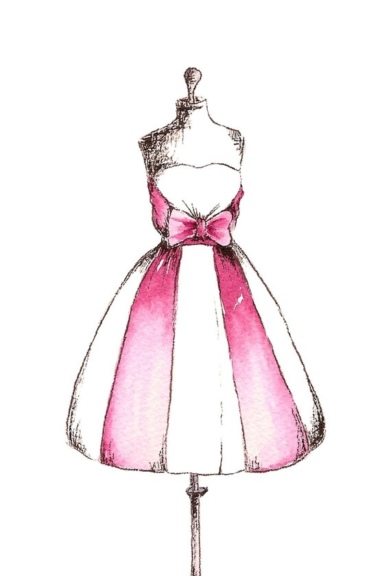

Welcome to My Homepage
My name is Katie Delgado, and this page contains information about me, along with links to my resume and other pages.
My Interests
One of my interests is fashion. I like shopping for new clothes and accessories to create new looks. But I also enjoy thrifting because it gives me a chance to recycle and make something new out of old clothes.

Another one of my interests is music. I listen to a variety of different genres.This connects to my other interest which is going to concerts. I love going to conerts and I think they are very worth it